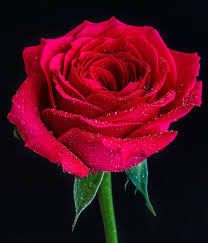
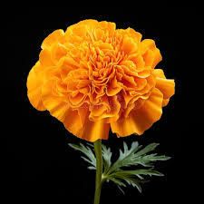
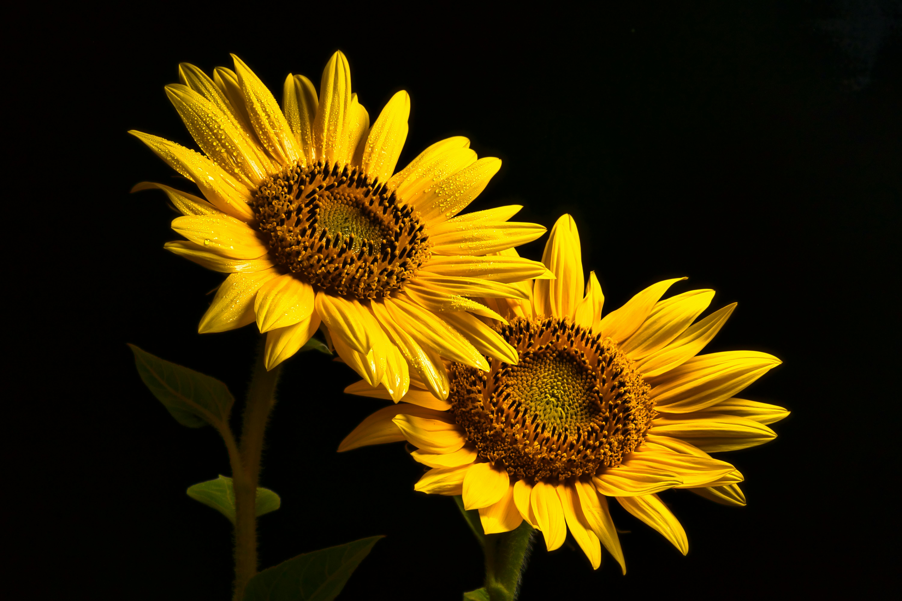

Red Flowers
Red flowers symbolize love and passion.

Popular Red Flowers
- Roses
- Tulips
- Poppies
What They Represent
- Love
- Passion
- Energy
This is a page about flowers organized by color and their meanings.
Red flowers symbolize love and passion.

Orange flowers symbolize energy and enthusiasm.

Yellow flowers symbolize happiness and positivity.
